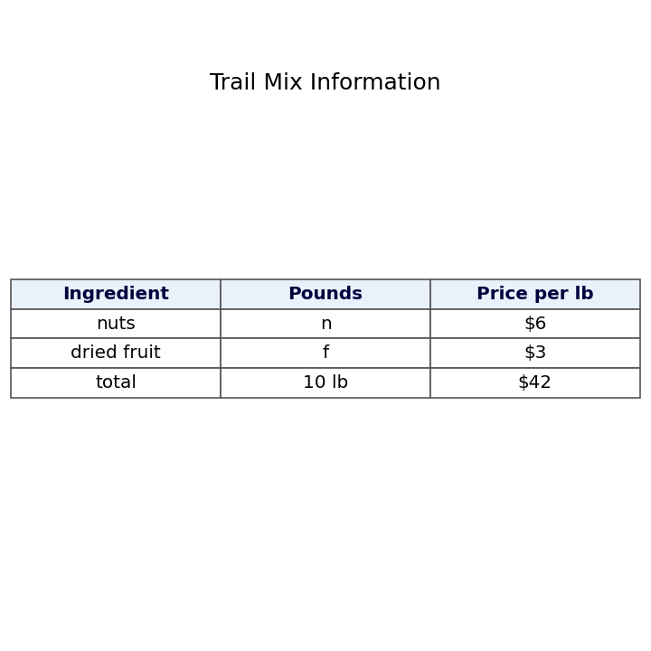
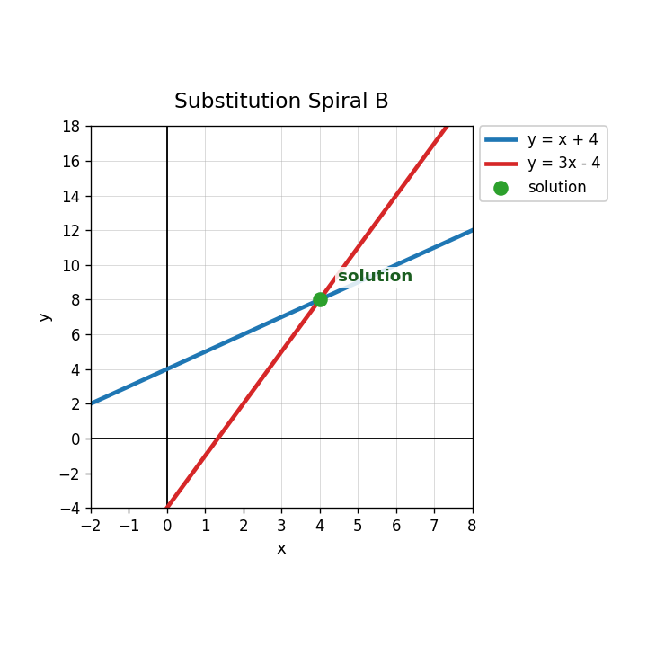
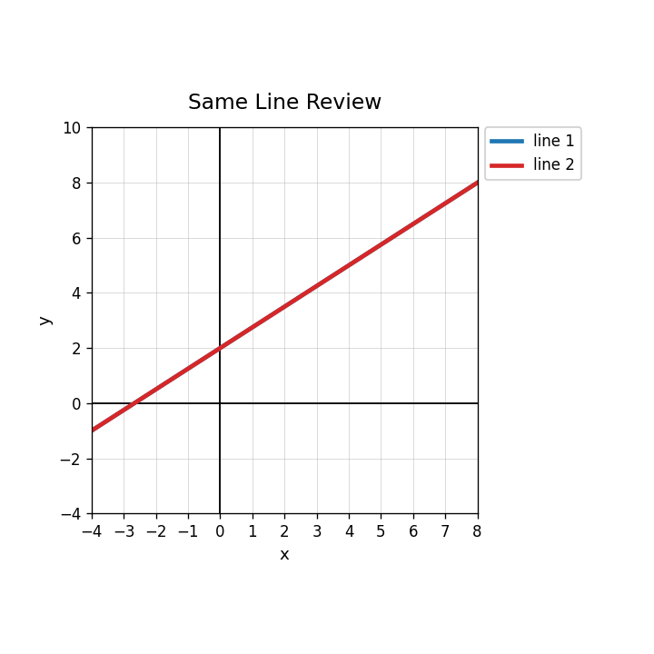
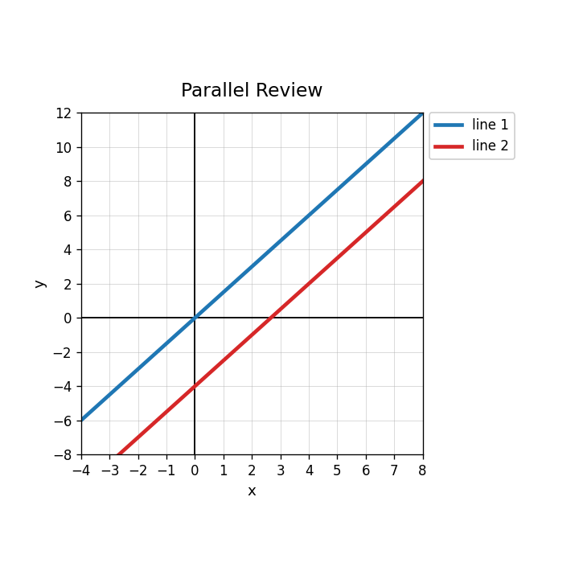

In the table, which equation represents the total number of pounds?

A mix has $n$ pounds of nuts at 6 dollars per pound and $f$ pounds of dried fruit at 3 dollars per pound. The total cost is 42 dollars. Write the cost equation.
A trail mix has 10 pounds total. Nuts cost 6 dollars per pound and dried fruit costs 3 dollars per pound. The total cost is 42 dollars.
Write and solve a system to find the pounds of each ingredient.
A student finds $n=2$ and $f=8$ for the trail mix problem. Check the solution and explain whether it is reasonable in context.
Why is substitution a good method for $y=x+4$ and $y=3x-4$?
For $x+y=18$ and $y=2x$, write the one-variable equation after substituting for $y$.
Use the graph to identify the solution.

Use substitution to check whether $(6,6)$ satisfies $y=0.5x+3$ and $y=-x+12$.
Solve by substitution.
$$x+y=18$$
$$y=2x$$
The graph shows a system. Write the ordered pair solution and explain how you could verify it algebraically.
A student substitutes $y=2x$ into $x+y=18$ and writes $x+2=18$. Identify the error and correct the equation.
Describe one advantage of solving a context system by substitution and one advantage of using a graph.
What solution type is shown when two equations graph as the same line?

Give one ordered pair that lies on both lines in a same-line system.
Solve using elimination.
$$x+y=14$$
$$x-y=4$$
Use the parallel-line graph to explain why the system has no solution.
